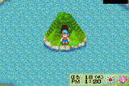
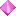

A mina da Primavera e perto da lagoa da Deusa no "Mother's Hill". Voce pode ir la o ano todo. Apenas suba para chegar na montanha e entre na mina. Dentro da mina voce vai encontrar minerios que voce vai precisar para fazer um "upgrade nas suas ferramentas. Cada upgrade tem um difrente tipo de minerio. Se voce apertar "Select" e depois mover a barra de rolagem sob sua tela de ferramentas, voce pode ver a cor do minerio que voce precisa bem embaixo de cada ferramenta. A atualizacao da ferramenta requer Copper/Bronze, Silver/Prata, Gold/Ouro, e o ultimo Mystirile. Voce tambem vai encontrar Adamantine e Orichalc. Estes dois minerios sao usados para fazer acessorios. Voce nao tem que cavar bem muito na mina para encontrar o raro Adamantite, apenas desca ate o decimo andar e assim por diante. Se voce cavar ate o centesimo andar voce vai encontrar uma Power Berry/Super Baga escondida no chao. E uma bocado de trabalho so por uma Power Berry! As joias da Deusa podem se encontradas escondidas nas rochas em certos andares da mina. Se voce encontrar as nove joiasa deusa vai aparecer e ira parabeniza-lo. Ela levara as nove joias e fundira para a Gem da Deusa no qual parece um pedaco branco do minerio de mystrile, voce ganhara forca com o tempo se voce equipala. Tendo ela apenas no seu inventario nao tera efeito. Ter a Gem e uma obrigatoriedade para se casar com a Deusa. A mina de Inverno na primavera no andar 255 voce vai encontrar a Teleport Stone/Pedra Teleportar. Ela aparecera nas rochas depois de voce ter chegado no terceiro ano na sua fazenda. A pedra de Teleporte e muito util e permite teleportar voce para a Cidade Mineral. Nao ha necessidade de caminhar a lugar algum! Apenas use a pedra de teleporte e depois selecione o local que voce quer ir no mapa da cidade. Transmissao Instantanea! Voce pode ate mesmo usa-la para acessar o lago durante qualquer estacao! Voce deve ter um slot vazio na secao de ferramente da sua mochila antes de pegar a Teleport Stone/Pedra de Teleporte! Depois de voce ter ferramentas amaldicoadas da Mina do Lago e voce abencoa-las, a Mytich Stones/As pedras "Mythic" irao aparecer na mina. As pedras parecem como um tronco de uma arvore negra e voce pode encontra-la nos andares 60, 102, 123, 152, 155, 171, 190, 202 e 222. Voce tipicamente encontrara um ou mais duas pedras nesses andares especificos. Se voce quiser aprimorar suas ferramentas para o Nivel 7 (Green/Verde) entao voce vai precisar das pedras e depois ir para a casa de Saibara. Ele cobra 50.000G pelo upgrade. Voce pode vender as pedras Mythic tambem por 20.000G cada peca. |
 |
| Local dos Minerios nas Minas (Cada Andar) | |
| Adamantite | 10 Decimo andar e abaixo |
| Copper/Bronze | Todos os andares |
| >Teleport Stone/Pedra Teleportar | Andar 255 so depois do terceiro(3) ano |
| Recipe/Receita | Como cozinhar batata fritas, 255 andar |
| Jewel of Goddess | Andares 60, 102, 123, 152, 155, 171, 190, 202, e 222 |
 Gem of the Goddess/Gem da Deusa Gem of the Goddess/Gem da Deusa |
Recebido apos coletar as 9 joias da Deusa |
| Gold/Ouro | Nivel 3 e abaixo |
| Mystrile | Andar 5 e abaixo |
 Orichalc Orichalc |
Andar 10 e abaixo |
| Power Berry/Super Baga | Centesimo(100) Andar |
| Mythic Stones/Pedra Mitica | Andares 60, 102, 123, 152, 155, 171, 190, 202, e 222 |
| Silver/Prata | Todos os andares |
| Black Grass/Grama Negra | (1)Primeiro ate o (100)centesimo andar |